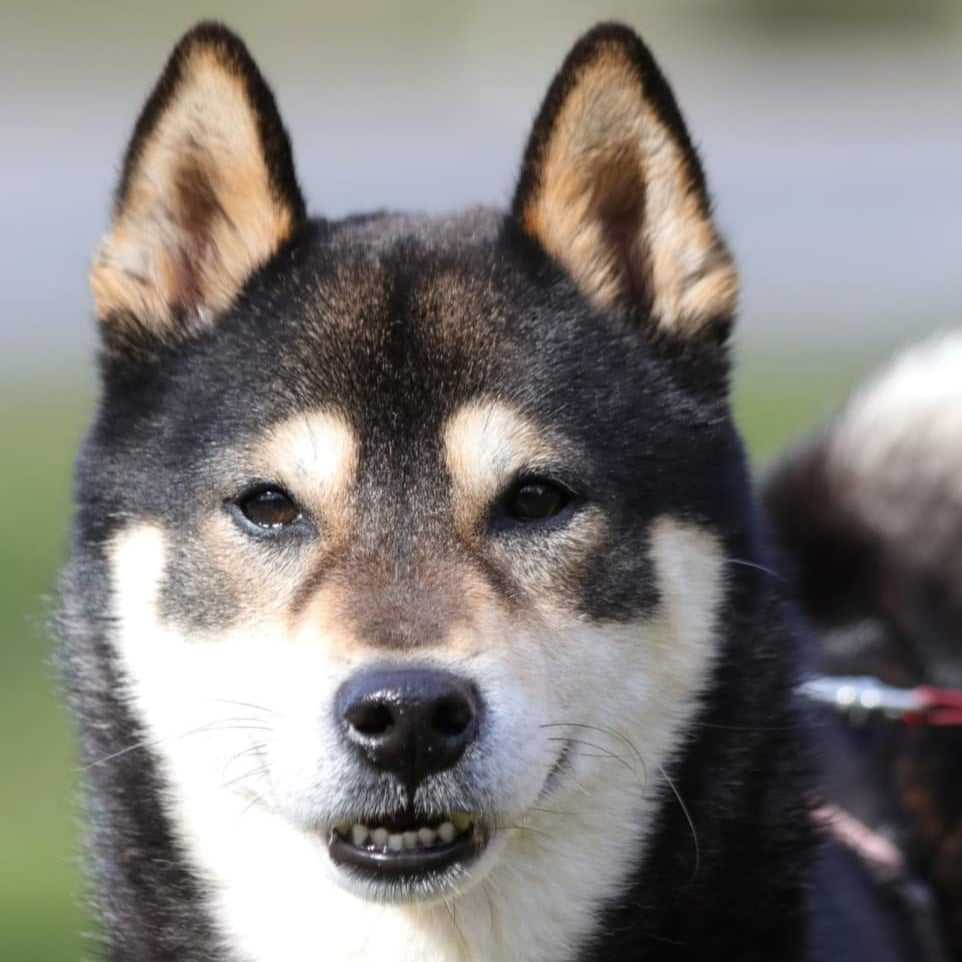
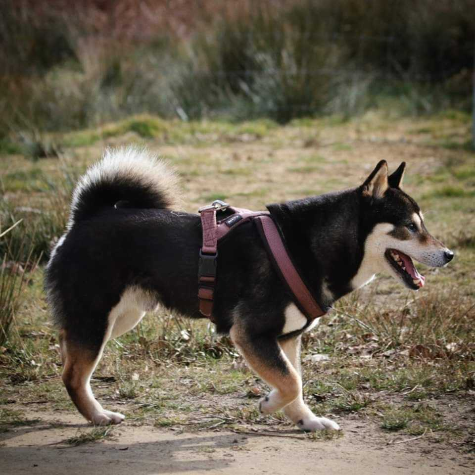

Shiba reu - Dino - geboren april 2016
Dino vond vorig jaar via ons een geweldige thuis.
Jammer genoeg kregen we een update door die heel moeilijk voor de mensen is....
De familie van Shiba rescue kid Dino reikte gisteren naar ons uit.
Door een slechte gezondheid zijn er veranderingen waar Dino moeilijk mee om kan.
Dit weegt heel zwaar door op de huidige situatie.
Een situatie waar niet gelijk verandering in zal komen.
Dino gaat dus met heel veel pijn in het hart op zoek naar een ander huisje...
Ventje mag zijn zoektocht al starten.
Dino zoekt een rustige thuis met tuin, zonder (toekomstige) jonge kinderen.
Hij leeft nu samen met een ander reutje.
Een match met soortgenoot is bespreekbaar en te testen.
Al is een thuis als enige hond mogelijk favoriet.
Wens je graag jouw interesse te tonen?
Stuur dan een privé bericht via shibarescuevzw@gmail.com
Via deze weg ontvang je onze vragenlijst,
bespreken we alle nodige details en de mogelijke adoptie van Dino.

|